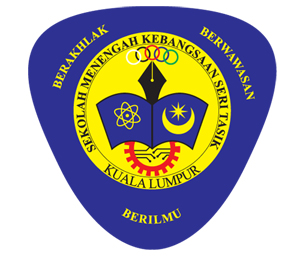

My Education Journey
Explore my academic background from school to university

Secondary School
SMK Seri Tasik, Kuala Lumpur
2017 - 2021
Completed SPM with active participation in sports and curricular activities including handball and athletics.

STPM
Kolej Tingkatan 6
2022 - 2023
Focused on arts stream with core subjects like MUET, Pengajian Am, Economy, Sports Science & Bahasa Melayu.

Bachelor's Degree
UiTM Puncak Perdana
2024 - Present
Pursuing Bachelor of Information Science (Hons) Information Content Management. It is a comprehensive academic program that focuses on the organization, management, and delivery of digital content and information assets. Offered under the Faculty of Information Management at UiTM, this degree equips students with the skills to manage content across platforms, especially in digital and web-based environments.